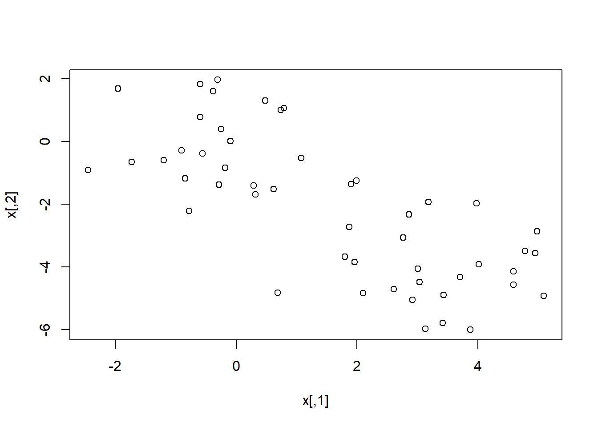

In Section 10.2.3, a formula for calculating PVE was given in Equation10.8. We also saw that the PVE can be obtained using the sdev output of the prcomp() function. On the USArrests data, calculate PVE in two ways:
Using the sdev output of the prcomp() function, as was done in Section 10.2.3.
#use the attach() function to quickly access targeted dataset.
attach(USArrests)
#use prcomp() funtion to perform PCA, by setting scale=true, standard deviation =1
pr.out <- prcomp(USArrests,scale=TRUE)
(pr.out$sdev)## [1] 1.5748783 0.9948694 0.5971291 0.4164494pr.var <- pr.out$sdev^2
pve <- pr.var / sum(pr.var)
(pve)## [1] 0.62006039 0.24744129 0.08914080 0.04335752#present our results in plot
plot(pve, xlab="Principal Component", ylab=" Proportion of Variance Explained ",ylim=c(0,1) ,type='b')
By applying Equation 10.8 directly. That is, use the prcomp() function to compute the principal component loadings. Then,use those loadings in Equation 10.8 to obtain the PVE.These two approaches should give the same results.
#obtain loadings from prcomp() function
loadings<-pr.out$rotation
#scale dataset just to make sure data we us is consistent
USArrests2 <- scale(USArrests)
#convert dataset into matrix, square each value in matrix, and sum them up
#to get the denominator of the equation
sumvalue<-sum(as.matrix(USArrests2)^2)
#multiple these two matrix and then sqaure
num<-(as.matrix(USArrests2)%*%loadings)^2
#calculate the column value for num matrix
colvalue<-c()
for (i in 1:length(num[1,])){
colvalue[i]<-sum(num[,i])
}
#calculate new pve
pve1<-colvalue/sumvalue
(pve1)## [1] 0.62006039 0.24744129 0.08914080 0.04335752